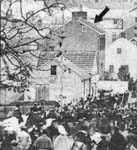
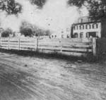
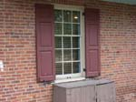
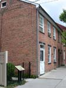
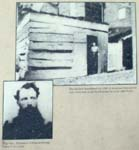

| page 5 of 8 |
| A Tour of Gettysburg with Gerald Bennett 7/30/2001 |
UCLA at Gettysburg Journal |
| page 5 of 8 |
 |
||
| Tillie Pierce, ca. 1863. | The Sweney house on Baltimore and South Streets. (now called the "Farnsworth House") | The attic room was used by Confederate sharpshooters who were dueling with Federal sharpshooters on Cemetery Hill. Note that the wall facing south is peppered with bullet holes. |
|  |
 |
|
| Harvey Sweney house at the time of the National Cemetery dedication. There are over 150 bullet scars near the attic window of the house. | The Winebrenner house on Baltimore and Lefever St. Directly opposite it was the McCreary house (no longer standing.) Louisianan Cpl. Wm. Poole was killed while firing from a balcony doorway of the McCreary house. Tree at left witnessed the battle. | The Samuel McCreary house and Lefever Street as they appeared ca. 1913. Note bullet holes in fence. |
|  |
 |
 |
| Bullet holes in the south-facing wall and shutters of the Winebrenner house. | Henry and Catherine Garlach house on Baltimore st. Catherine Garlach hid Union General Schimmelfennig from the Confederates in a shed in her back yard. | The kitchen woodshed in 1900 and Gen. Schimmelfennig. |